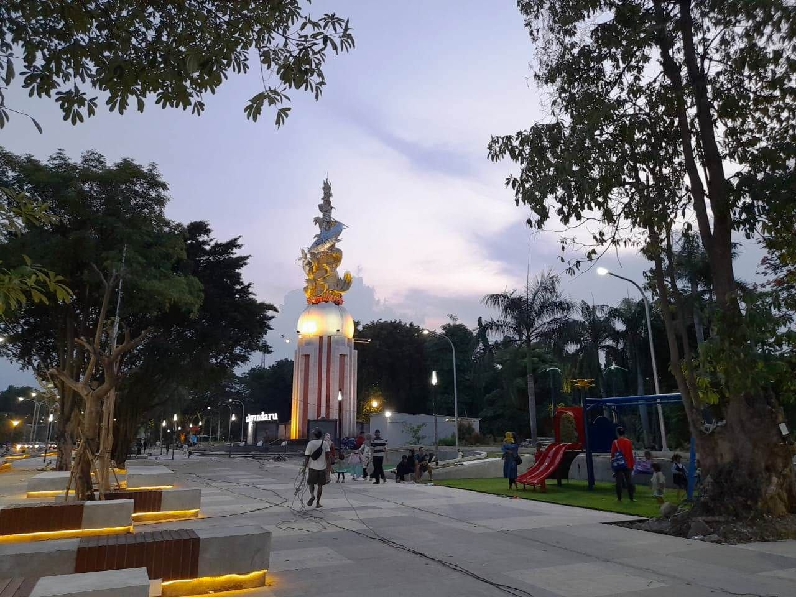

About Tourist Places
There quite a few places where a tourist could go when visiting Sidoarjo. For this page I will pick my personal reccomendations.
The Mpu Tantular State Museum is a state museum located in Buduran sub-district, Sidoarjo, East Java. Initially, this museum was called the Stedelijk Historisch Museum Soerabaia, founded by Godfried von Faber in 1933 and inaugurated on July 25 1937. It is a historical place filled with many interesting pieces, specifically 15.600 in it's collection. The pieces are classified into ten types of collections, namely: geology, biology, ethnography, history, numismatics, heraldry, fine arts, technology, ceramics and philology.